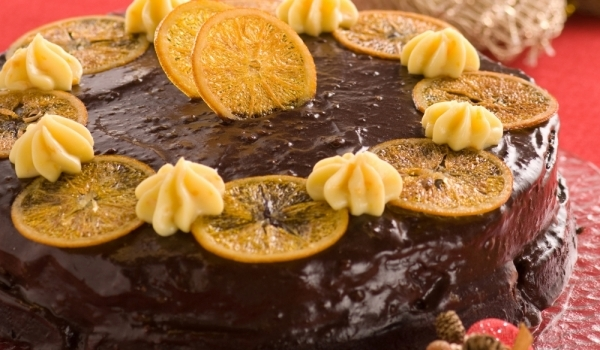

Шоколадова коледна торта
Продукти:
- 3 броя готови какаови блатове за торта
- 2 кофички заквасена сметана
- 200 г течен шоколад
- 6 банана
- компот от праскови
- коктейлни череши
- шоколадови пръчици
Начин на приготвяне:
Кремът се приготвя като се разбие с миксер заквасената сметана заедно с течния шоколад. Всеки блат от тортата се напоява с водата на компота от праскови, нареждат се банани на кръгчета и се намазва с крема заквасена сметана и шоколад. Най-отгоре може да се украси с банани, коктейлни черешки и шоколадови пръчици. Тортата се поставя в хладилник, за да стегне и отлежи.